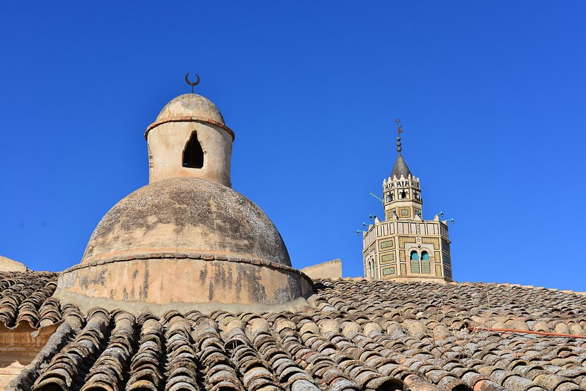
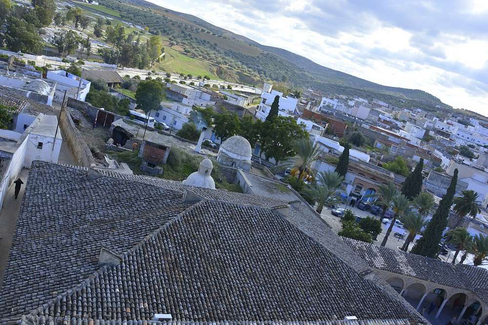

简介
由 17 世纪初被逐出西班牙的安达卢西亚人修建，融合了突尼斯传统与西班牙-摩尔艺术。宣礼塔上有一座指针逆时针转动的时钟。
照片


历史
摩里斯科人被逐出西班牙（1609-1614 年）之后，许多人定居在迈杰尔达河谷，重建了泰斯图尔。清真寺建于 17 世纪前三十年，很可能在 1631 年之前，由定居该城的安达卢西亚人穆罕默德·塔加里努主持修建。18 世纪增建了第二座庭院和净房。2014 年，居民和社团让停摆近三个世纪的宣礼塔时钟重新运转。
建筑
礼拜殿的平面（9 条纵廊）沿袭凯鲁万的传统，但瓦屋顶、灰泥装饰和宣礼塔则是安达卢西亚式的。宣礼塔高 22.50 米，下部是托莱多式的砖石方塔，上部是饰有陶瓷的八角塔，令人想起阿拉贡的钟楼。庭院里有一座 1761 年的日晷，用来指示礼拜时间。
重要年代
- 1609被逐出西班牙的摩里斯科人（1609-1614 年）抵达突尼斯
- 1631清真寺建成（很可能在此之前）
- 1761庭院中的日晷
- 2014宣礼塔的时钟重新运转
参观
这里首先是礼拜的场所：请穿着得体，进入礼拜殿前请脱鞋，并避开礼拜时间。在一些大清真寺，非穆斯林访客可以进入庭院，但不能进入礼拜殿。开放时间会有变动：请在当地询问。
在地图上
资料与链接
资料来源
- 文字由 Mosquées en Tunisie 根据上述资料（维基百科、Qantara、Discover Islamic Art、联合国教科文组织）撰写，核对于 2026 年 10 月 9 日。
- Wikidata : Q3114985 (CC0)
- 照片：维基共享资源，每张照片下方注明作者和许可协议。
- 位置：OpenStreetMap（ODbL）和 Wikidata。